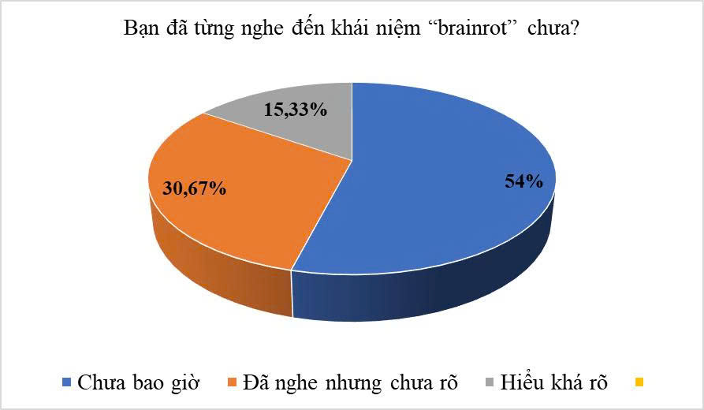

FocusCube —
đo sự tập trung, không phán xét
Một khối lập phương 100 mm đặt trên bàn học. Mỗi lần bạn xoay mặt đỏ lên trên, bắt đầu một phiên 25 phút — và mọi lần gián đoạn đều được ghi lại thành dữ liệu nhìn thấy được. Song hành với đó là website đo phản xạ và rèn tập trung.
Cơ Sở Khoa Học Về Attention Span
Hiểu rõ cơ chế gián đoạn là bước đầu để đo — và sửa — thói quen học tập.
1. Cạm bẫy Dopamine
Các video ngắn tạo ra những cú "hích" Dopamine liên tục. Não bộ quen với phần thưởng tức thì và lười xử lý thông tin dài.
2. Thùy Trán (PFC)
Vùng não chịu trách nhiệm lập kế hoạch và kiềm chế bị suy yếu kết nối, khiến bạn dễ bốc đồng và khó ngồi yên.
3. Tính dẻo Thần kinh
Não bộ có khả năng tái cấu trúc. Rèn luyện đúng cách, đo lại định kỳ, não bộ sẽ hồi phục khả năng tập trung.
Dữ Liệu Khảo Sát

💡 Con số biết nói:
- 54% học sinh chưa bao giờ nghe đến khái niệm suy giảm tập trung dù đang mắc phải.
- Thời gian trung bình sử dụng MXH: 3.5 giờ/ngày.
Câu 1/5
Câu hỏi...
Kết quả
Kết nối FocusCube
Kết nối bằng Bluetooth (BLE) hoặc USB Serial. Cube tự quyết định chế độ — website chỉ phản chiếu, không có nút chọn chế độ để tránh hai nguồn sự thật mâu thuẫn.
Bảng điều khiển kết nối
- Kết nối
- —
- Firmware
- —
- Hiệu chỉnh IMU
- —
- Hệ số lux
- —
Nhập dữ liệu thủ công (dự phòng khi Web Serial / BLE không khả dụng)
Sáu mặt của FocusCube
| Mặt | Chế độ | Thời lượng | Nhận biết khi mở |
|---|
Trạng thái cube
Chưa nhận dữ liệu từ thiết bị.
- Còn lại
- —
- Đã học
- —
- Ánh sáng
- —
- Đèn bù sáng
- —
- Đổi mặt
- —
- Rời bàn / ồn
- —
Chuỗi ngày học
Chưa có phiên nào được lưu.
Phòng Lab: Đo Phản Xạ Thần Kinh
Bài test Stroop đo phản xạ trong một nhiệm vụ cụ thể, không phải đo toàn diện năng lực chú ý. Kết quả được dùng làm thành phần Δ (thay đổi phản xạ) của SSI.
Bài Test Stroop
Đo lường độ trễ khi não xử lý thông tin xung đột.
Nhiệm vụ: Chọn MÀU MỰC của chữ (Đừng đọc chữ!)
Tốc độ trung bình
Chỉ số Ổn định Phiên học (SSI)
SSI là chỉ số tổng hợp do nhóm xây dựng từ năm thành phần đo được — không phải thang đo chuẩn hóa, không phải chẩn đoán y khoa và không phải thang xếp hạng học sinh.
Điểm phiên gần nhất
Chưa có dữ liệu phiên nào.
Yếu tố kéo điểm nhiều nhất
—
- Stroop trước
- —
- Stroop sau
- —
- Phiên
- —
- Cube vs Web
- —
Phân rã điểm SSI
Mỗi thanh là điểm đóng góp của một thành phần (điểm tối đa × trọng số).
Chưa có dữ liệu để vẽ biểu đồ.
Xem dưới dạng bảng (cho trình đọc màn hình)
| Thành phần | Trọng số | Điểm chuẩn hóa | Đóng góp |
|---|
Lịch sử phiên
| Thời điểm | Chế độ | Kết thúc | Đổi mặt | SSI |
|---|
Chưa có lịch sử. Hoàn tất một phiên FocusCube để dữ liệu xuất hiện ở đây.
Âm nền hỗ trợ tập trung
Nền âm thanh đều (mưa, trà, tiếng trắng) giúp giảm nhiễu âm thanh nền trong phòng.
Lưu ý: hiệu quả của âm nền phụ thuộc cá nhân và chưa có bằng chứng mạnh rằng âm nền "kích hoạt sóng não". Đây là công cụ hỗ trợ, không phải liệu pháp.
Nghiên cứu & Báo chí
National Geographic: Brain Rot
Bài báo về mối lo ngại sức khoẻ tâm thần khi tiêu thụ nội dung chất lượng thấp trên mạng xã hội.
Đọc bài báo gốcSSRN — preprints về sức khoẻ tâm thần & thiết bị số
Kho preprint mở, cần đọc kèm phản biện. Không dùng làm bằng chứng cho tuyên bố định lượng.
Xem tài liệu gốcĐiều FocusCube không nói
- Không đo EEG, không đo "sóng não".
- Không chẩn đoán ADHD hay rối loạn chú ý.
- Không so sánh SSI giữa hai học sinh khác nhau, và không dùng để xếp hạng.
- Không so sánh SSI giữa phiên 25 phút và phiên 45 phút (ngưỡng khác nhau).
SSI là chỉ số cá nhân để theo dõi xu hướng của chính bạn. Mọi trích dẫn định lượng trên website đều phải ghi rõ nguồn và cỡ mẫu.
Kế Hoạch Hành Động 7 Ngày
Đo trước, đo lại sau — mỗi tuần một vòng, ghi vào nhật ký thử nghiệm.
Tải Phác Đồ 7 Ngày (Word)